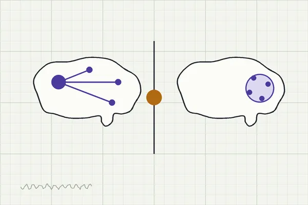

2025-04-30 · Paper · Nature 642, 133-142
Adversarial testing of global neuronal workspace and integrated information theories of consciousness

The first big head-to-head test of two theories of consciousness found that each got some predictions right and each got key claims wrong.
Two rival theories agreed in advance what results would count against them. Then 256 people looked at pictures while their brains were scanned in three different ways. Neither theory won. One theory said the back of the brain should stay in sync for as long as a picture is seen; it did not. The other said the front of the brain should flare up when a picture disappears; mostly it did not.
n = 256 (fMRI 120, MEG 102, iEEG 34), suprathreshold faces, objects, letters and false fonts shown for 0.5, 1.0 or 1.5 s, task-relevant and task-irrelevant. Content information found in visual, ventrotemporal and inferior frontal cortex; sustained responses in occipital and lateral temporal cortex tracked duration; content-specific synchronisation between frontal and early visual areas. IIT challenged by no sustained posterior synchronisation; GNWT challenged by general lack of offset ignition and limited prefrontal representation of some conscious dimensions. Preregistration: osf.io/92tbg. Data CC BY 4.0, account needed for download.
What we do with it
The data is public (Experiment 1: MEG, fMRI, iEEG), so it is the first place we test whether the published conclusions survive other reasonable analyses. Note the paper's iEEG n is 34; the plan said 38. Planned
Read the original. Source checked against the original.